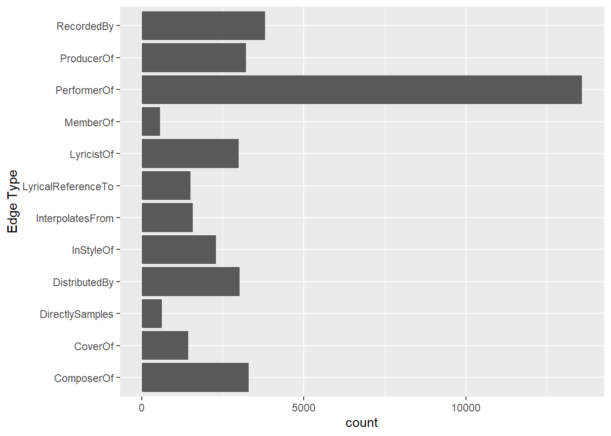
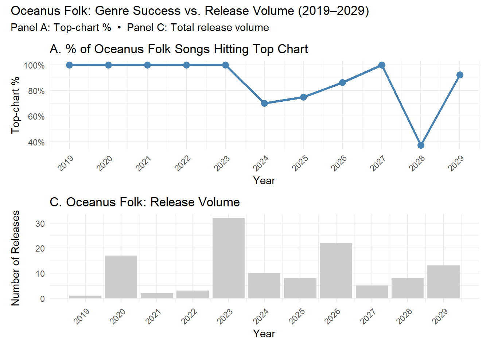
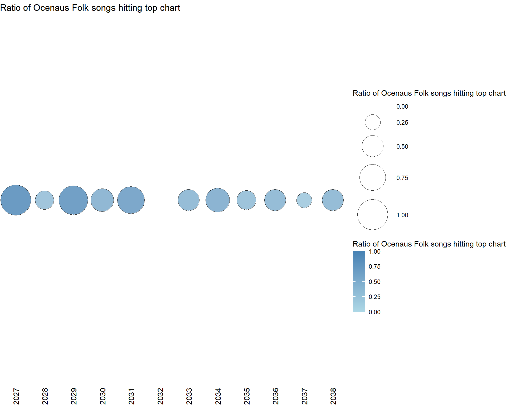

pacman::p_load(tidyverse, jsonlite, SmartEDA, tidygraph,ggraph, igraph)Take-home_Ex02
1. Installing Packages and Importing Data
1.1 Read the Data
# Read JSON file
mc1_data <- fromJSON("data/MC1_graph.json")str(mc1_data, max.level = 1)List of 5
$ directed : logi TRUE
$ multigraph: logi TRUE
$ graph :List of 2
$ nodes :'data.frame': 17412 obs. of 10 variables:
$ links :'data.frame': 37857 obs. of 4 variables:glimpse(mc1_data)List of 5
$ directed : logi TRUE
$ multigraph: logi TRUE
$ graph :List of 2
..$ node_default: Named list()
..$ edge_default: Named list()
$ nodes :'data.frame': 17412 obs. of 10 variables:
..$ Node Type : chr [1:17412] "Song" "Person" "Person" "Person" ...
..$ name : chr [1:17412] "Breaking These Chains" "Carlos Duffy" "Min Qin" "Xiuying Xie" ...
..$ single : logi [1:17412] TRUE NA NA NA NA FALSE ...
..$ release_date : chr [1:17412] "2017" NA NA NA ...
..$ genre : chr [1:17412] "Oceanus Folk" NA NA NA ...
..$ notable : logi [1:17412] TRUE NA NA NA NA TRUE ...
..$ id : int [1:17412] 0 1 2 3 4 5 6 7 8 9 ...
..$ written_date : chr [1:17412] NA NA NA NA ...
..$ stage_name : chr [1:17412] NA NA NA NA ...
..$ notoriety_date: chr [1:17412] NA NA NA NA ...
$ links :'data.frame': 37857 obs. of 4 variables:
..$ Edge Type: chr [1:37857] "InterpolatesFrom" "RecordedBy" "PerformerOf" "ComposerOf" ...
..$ source : int [1:37857] 0 0 1 1 2 2 3 5 5 5 ...
..$ target : int [1:37857] 1841 4 0 16180 0 16180 0 5088 14332 11677 ...
..$ key : int [1:37857] 0 0 0 0 0 0 0 0 0 0 ...1.2 Extract and inspect
nodes_tbl <- as_tibble(mc1_data$nodes)
edges_tbl <- as_tibble(mc1_data$links)1.3 Initial EDA
ggplot(data = edges_tbl,
aes(y = `Edge Type`)) +
geom_bar()
2. Creating Knowledge Graph
Step 1. Mapping from node id to row index
id_map <- tibble(id = nodes_tbl$id,
index = seq_len(
nrow(nodes_tbl)))This ensures each id from your node list is mapped to the correct row number.
Step 2. Map Source and target IDs to row indices
edges_tbl <- edges_tbl %>%
left_join(id_map, by = c("source" = "id")) %>%
rename(from = index) %>%
left_join(id_map, by = c("target" = "id")) %>%
rename(to = index)Step 3. Remove N/A
edges_tbl <- edges_tbl %>%
filter(!is.na(from), !is.na(to))Step 4. Creating the graph
Lastly, tbl_graph is used to create tidygraph’s graph object by using the code chunk below
graph <- tbl_graph(nodes = nodes_tbl,
edges = edges_tbl,
directed = mc1_data$directed)Step 5. Visualizing the knowledge graph
set.seed(1234)2. Visualizing the whole graph
ggraph(graph, layout = "fr") +
geom_edge_link(alpha = 0.3,
colour = "gray") +
geom_node_point(aes(color = `Node Type`),
size = 4) +
geom_node_text(aes(label = name),
repel = TRUE,
size = 2.5) +
theme_void()Note: Plot the line first
Step 1: Filter edges to only “Memberof”
graph_memberof <- graph %>%
activate(edges) %>%
filter(`Edge Type` == "MemberOf")Step 2: Extract only connected nodes(i.e., used in thesee edges)
used_nodes_indices <- graph_memberof %>%
activate(edges) %>%
as_tibble() %>%
select(from, to) %>%
unlist() %>%
unique()Step 3: Keep only those nodes
graph_memberof <- graph_memberof %>%
activate(nodes) %>%
mutate(row_id = row_number()) %>%
filter(row_id %in% used_nodes_indices) %>%
select(-row_id) Plot the sub-graph
ggraph(graph_memberof,
layout = "fr") +
geom_edge_link(alpha = 0.5,
colour = "gray") +
geom_node_point(aes(color = `Node Type`),
size = 1) +
geom_node_text(aes(label = name),
repel = TRUE,
size = 2.5) +
theme_void()Warning: ggrepel: 789 unlabeled data points (too many overlaps). Consider
increasing max.overlaps
3. Background and Scenario
One of music’s biggest superstars is Oceanus native Sailor Shift. From humble beginnings, Sailor has grown in popularity and now enjoys fans around the world. Sailor started her career on the island nation of Oceanus which can be clearly seen in her early work, she started in the genre of “Oceanus Folk”. While Sailor has moved away from the traditional Oceanus style, the Oceanus Folk has made a name for itself in the musical world. The popularity of this music is one of the factors driving an increase in tourism to a quiet island nation that used to be known for fishing.
In 2023, Sailor Shift joined the Ivy Echoes – an all-female Oceanus Folk band consisting of Sailor (vocalist), Maya Jensen (vocalist), Lila “Lilly” Hartman (guitarist), Jade Thompson (drummer), and Sophie Ramirez (bassist). They played together at venues throughout Oceanus but had broken up to pursue their individual careers by 2026. Sailor’s breakthrough came in 2028 when one of her singles went viral, launched to the top of the global charts (something no other Oceanus Folk song had ever done). Since then, she has only continued to grow in popularity worldwide.
Sailor has released a new album almost every year since her big break, and each has done better than the last. Although she has remained primarily a solo artist, she has also frequently collaborated with other established artists, especially in the Indie Pop and Indie Folk genres. She herself has branched out musically over the years but regularly returns to the Oceanus Folk genre — even as the genre’s influence on the rest of the music world has spread even more.
Sailor has always been passionate about two things: (1) spreading Oceanus Folk, and (2) helping lesser-known artists break into music. Because of those goals, she’s particularly famous for her frequent collaborations.
Additionally, because of Sailor’s success, more attention began to be paid over the years to her previous bandmates. All 4 have continued in the music industry—Maya as an independent vocalist, Lilly and Jade as instrumentalists in other bands, and Sophie as a music producer for a major record label. In various ways, all of them have contributed to the increased influence of Oceanus folk, resulting in a new generation of up-and-coming Oceanus Folk artists seeking to make a name for themselves in the music industry.
Now, as Sailor returns to Oceanus in 2040, a local journalist – Silas Reed – is writing a piece titled Oceanus Folk: Then-and-Now that aims to trace the rise of Sailor and the influence of Oceanus Folk on the rest of the music world. He has collected a large dataset of musical artists, producers, albums, songs, and influences and organized it into a knowledge graph. Your task is to help Silas create beautiful and informative visualizations of this data and uncover new and interesting information about Sailor’s past, her rise to stardom, and her influence.
2. Task 2 - Develop visualizations that illustrate how the influence of Oceanus Folk has spread through the musical world.
2.1 Was this influence intermittent or did it have a gradual rise?
Step 1 Filtering Time and Oceanus folks song / album after 2028
filtered_songs <- nodes_tbl %>%
# 先只留「歌曲」節點，且 genre 是 Oceanus Folk
filter(`Node Type` == "Song",
genre == "Oceanus Folk",
!is.na(release_date),
release_date != "") %>%
# 直接把 release_date 當成數字轉年
mutate(release_year = as.integer(release_date)) %>%
# 過濾 2028 之後
filter(release_year > 2028) %>%
filter(`notable` == TRUE)
# 看看結果
filtered_songs# A tibble: 35 × 11
`Node Type` name single release_date genre notable id written_date
<chr> <chr> <lgl> <chr> <chr> <lgl> <int> <chr>
1 Song Whispers fr… TRUE 2029 Ocea… TRUE 4393 <NA>
2 Song Heroes of H… TRUE 2029 Ocea… TRUE 9493 <NA>
3 Song Echoes With… TRUE 2029 Ocea… TRUE 9655 2029
4 Song Unbreakable… TRUE 2030 Ocea… TRUE 12138 2030
5 Song Celestial P… TRUE 2029 Ocea… TRUE 12490 2029
6 Song Reef Road R… FALSE 2030 Ocea… TRUE 12524 <NA>
7 Song Waiting by … TRUE 2029 Ocea… TRUE 13396 2029
8 Song Star-Touche… TRUE 2034 Ocea… TRUE 17050 <NA>
9 Song When the Ti… FALSE 2037 Ocea… TRUE 17125 <NA>
10 Song Anchored Lo… TRUE 2030 Ocea… TRUE 17247 <NA>
# ℹ 25 more rows
# ℹ 3 more variables: stage_name <chr>, notoriety_date <chr>,
# release_year <int># 1. 把你已經處理好的 graph 轉成 tidygraph
tg <- as_tbl_graph(graph) %>%
activate(nodes) %>%
# 加一個 genre_clean 欄，把 NA 換成 "Unknown"
mutate(genre_clean = ifelse(is.na(genre) | genre=="", "Unknown", genre))
# 2. 只保留 Album 與 Song 節點（若要畫全網就可以跳過這步）
tg_sub <- tg %>%
activate(nodes) %>%
filter(`Node Type` %in% c("Album","Song"))
# 3. 畫網狀圖：節點顏色對應 genre，形狀對應 Node Type
ggraph(tg_sub, layout = "fr") +
# 邊
geom_edge_link(alpha = 0.2, colour = "grey70") +
# 節點
geom_node_point(aes(color = genre_clean,
shape = `Node Type`),
size = 3) +
# 節點標籤（可視需要開關）
# geom_node_text(aes(label = name), size = 2, repel = TRUE) +
scale_colour_brewer(palette = "Set3") +
scale_shape_manual(values = c(16, 17)) + # 16=circle,17=triangle
theme_void() +
labs(color = "Genre",
shape = "Node Type",
title = "Album & Song")Warning in RColorBrewer::brewer.pal(n, pal): n too large, allowed maximum for palette Set3 is 12
Returning the palette you asked for with that many colorsWarning: Removed 2114 rows containing missing values or values outside the scale range
(`geom_point()`).
# 1. 準備 df：只要 2029 年以後、Oceanus Folk Song 的 notable 比例
df <- nodes_tbl %>%
filter(`Node Type` == "Song",
genre == "Oceanus Folk",
!is.na(release_date), release_date != "") %>%
mutate(year = as.integer(release_date)) %>%
filter(year > 2026, year < 2040) %>%
group_by(year) %>%
summarise(
total = n(),
notable = sum(notable, na.rm = TRUE),
ratio = notable / total,
.groups = "drop"
) %>%
arrange(year) %>%
mutate(genre = "Oceanus Folk") # for display
# 2. 把 df 轉成 tbl_graph，edges 用空 data.frame()
g_bubble <- tbl_graph(
nodes = df %>% mutate(name = as.character(year)),
edges = data.frame(from=character(), to=character()),
directed = FALSE
)
# 3. 建 manual 佈局：x=year, y=1（或其他常數）
layout_bubble <- create_layout(
g_bubble,
layout = "manual",
x = df$year,
y = rep(1, nrow(df))
)
# 4. 用 ggraph 畫泡泡
ggraph(layout_bubble) +
geom_node_point(aes(size = ratio, fill = ratio),
shape = 21, colour = "black", alpha = 0.8) +
scale_size_area(max_size = 20, name = "Ratio of Ocenaus Folk songs hitting top chart") +
scale_fill_gradient(low = "lightblue", high = "steelblue", name = "Ratio of Ocenaus Folk songs hitting top chart") +
scale_x_continuous("Released Year", breaks = df$year) +
scale_y_continuous(NULL) +
labs(title = "Ratio of Ocenaus Folk songs hitting top chart") +
theme_void() +
theme(
axis.text.x = element_text(angle = 90, hjust = 1),
legend.position = "right"
)